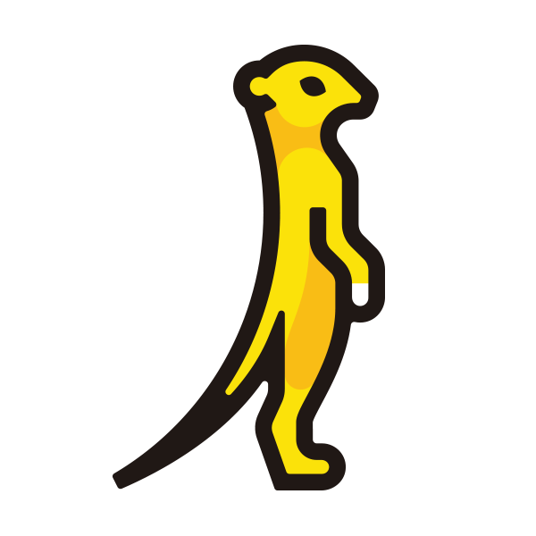
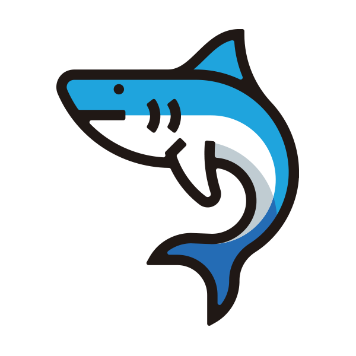

Day 12: 下一步的地圖——Sprint 4 預告¶
正課(Day 0–10)教你把雲蓋出來,後日談(Day 11)帶你看全景。這一篇望向下一段旅程:Sprint 4 已經開跑——階段一(Day 13–18)已完課上線,後半仍在進行。本頁保留完整課綱地圖。
你在課程的哪裡
- Day 0–10:動手蓋雲,11 個服務上線,K8s-as-a-Service 走通。
- Day 11:不動手,盤點整個 OpenStack 版圖——哪些用過、哪些還沒。
- Day 12(本篇):下一段的地圖。Day 11 那些「還沒拼上的積木」,加上單機 lab 教不了的東西,組成 Sprint 4。
從「能用」到「能維運、能擴展」¶
Sprint 3 結束時,你擁有一朵能開 VM、能長 K8s 的雲。但把時間軸拉長,真實世界的 OpenStack 工程師每天面對的是另外三類問題:
- 這朵雲還缺什麼能力?——物件儲存、共享檔案系統、DNS、DBaaS……
- 怎麼長期維運?——監控、升版、備份、資料庫維護。
- 怎麼隨需求擴容?——加節點、控制面高可用、容量規劃。
Sprint 4 用 12 天、四個階段回答這三類問題:

21 可觀測性
24 橫向擴展實戰圖上的臉都是各服務的官方吉祥物;逐日細節見下方課表。
預定課表(Day 13–24)¶
| Day | 主題 | 一句話 |
|---|---|---|
| 13 | Skyline 新一代儀表板 ✅ | 一個 flag 的增量部署暖身;同一朵雲,現代化介面——與 Horizon 並存對照 |
| 14 | Ceph 基礎 ✅ | 生產 OpenStack 的儲存標配,單機 bootstrap 一套當骨幹 |
| 15 | 物件儲存(RGW) ✅ | S3 與 Swift 兩種 API 一次學會;為什麼不是原生 Swift,見下方設計決定 |
| 16 | Manila 共享檔案系統 ✅ | 多台 VM 同掛一顆碟;壓軸把 K8s RWX PVC 接回 Day 8 的 cluster |
| 17 | Designate DNS ✅ | zone 與 recordset、Neutron 整合,幫 Day 4 的 LB 掛上域名 |
| 18 | Trove 資料庫服務 ✅ | 一鍵開 MySQL 的 RDS 體驗:建立實例、備份、還原 |
| 19 | server create 背後發生什麼 ✅ | fernet token 解剖、request-id 跨服務追蹤、RPC 實況、qemu 進程對讀 |
| 20 | 封包怎麼流(OVN) ✅ | OVN 深潛:logical flow、ovn-trace 追封包、FIP 的 NAT 在哪一條規則 |
| 21 | 可觀測性 ✅ | Prometheus + Grafana + 集中式 log;該盯什麼、怎麼用它把除錯加速十倍 |
| 22 | 更新與備份還原 ✅ | 系列內更新、SLURP 政策、金絲雀判決的還原演練 |
| 23 | 多節點部署與 HA ✅ | 四台真機、haproxy 與 VIP 復活、關掉一台 controller 給你看 |
| 24 | 橫向擴展 ✅ | 新 compute 節點怎麼加入、容量怎麼規劃、Magnum autoscaler 的前提 |
三個先講清楚的設計決定¶
為什麼物件儲存教 RGW,而不是 Swift¶
Swift 是 OpenStack 的元老級物件儲存服務,專案至今仍在維護;但 Kolla-Ansible 已在 2025 年移除了 Swift 的部署支援——整合長期乏人維護,社群選擇只保留 Ceph 路線(各部署工具的支援現況,見部署工具圖鑑)。
這反映的是整個業界的走向:物件儲存的主流實作已經是 Ceph。一套 Ceph 同時提供三種儲存——區塊(Cinder 後端)、檔案(Manila 後端)、物件(RGW),不需要為了物件儲存另外維護一套獨立系統。而 RGW 同時支援 S3 與 Swift 兩種 API,原本寫給 Swift 的應用程式指向 RGW 可以直接沿用。
因此 Sprint 4 用「一天 Ceph、一天 RGW」來教物件儲存:Swift 的 API 照樣學到,還多學到 S3 與 Ceph 本身;Day 15 的 Manila 也建立在同一套 Ceph 上。
為什麼深層原理排在服務之後¶
Day 19–20 的驗收標準只有一條:不靠 OpenStack CLI,你能不能讀懂這朵雲在做什麼? 解剖 token、追 request-id、用 ovn-trace 模擬封包——這些需要你先累積夠多「用過的東西」當解剖對象。前 18 天攢的每個服務,都是這兩天的教材。
為什麼最後兩天要租新機器¶
橫向擴展在單機上教不了——「多機」的意義就在於真的有網路隔在中間。Day 23–24 會另租 3–4 台小型 VM(兩天約 US$36–49),部一套真正的多節點 OpenStack:你會看到單機時被關掉的 haproxy/VIP 為什麼存在、新的 compute 節點怎麼在使用者無感的情況下讓雲變大——這正是「Nova/Magnum 怎麼準備好機器讓使用者去長」的答案。教完即拆,Day 10 記錄的重建程序終於派上用場。
下一步¶
- Sprint 4 開課後,課表每一列會變成一篇完整 runbook,格式與 Day 0–10 相同。
- 想先暖身 → Day 11 · 服務全景圖把 Sprint 4 要拼的積木都介紹過了。
- 想回顧這一段 → Sprint 3 回顧。